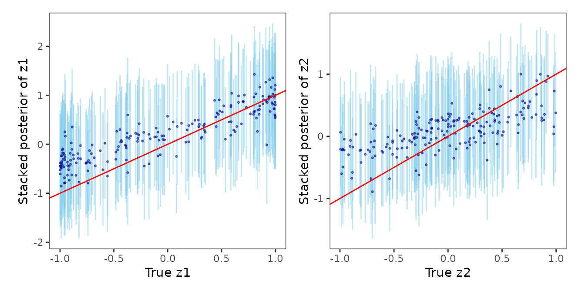
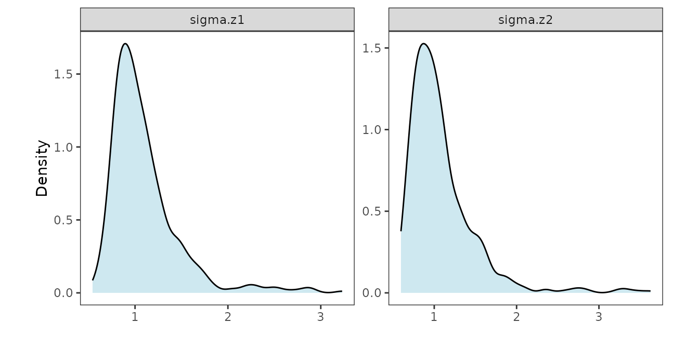
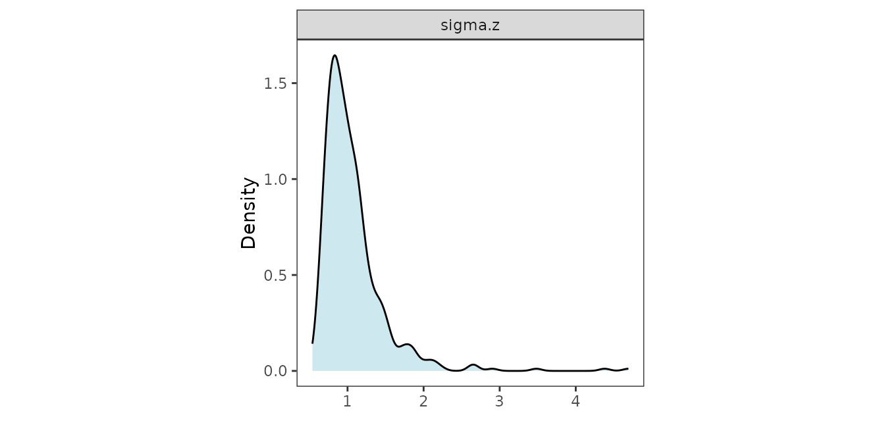
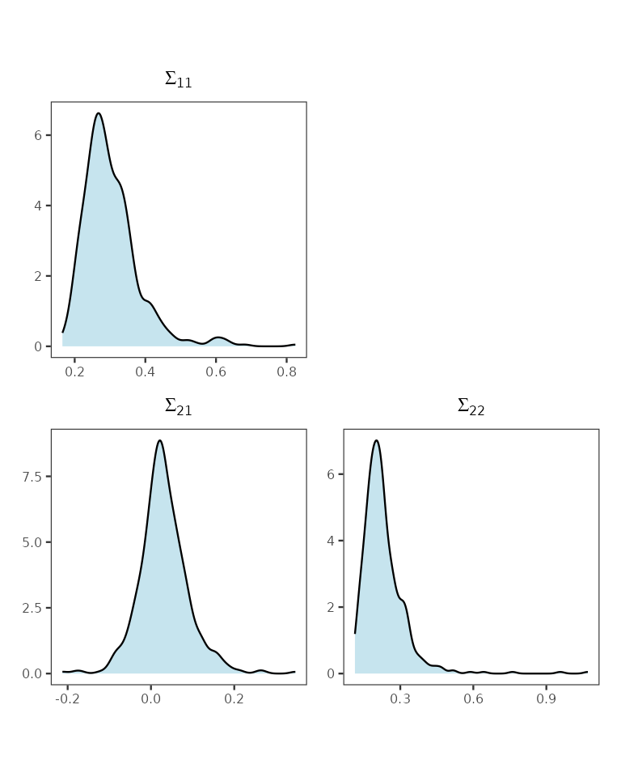
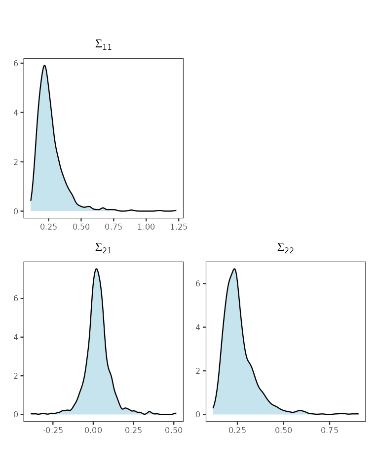
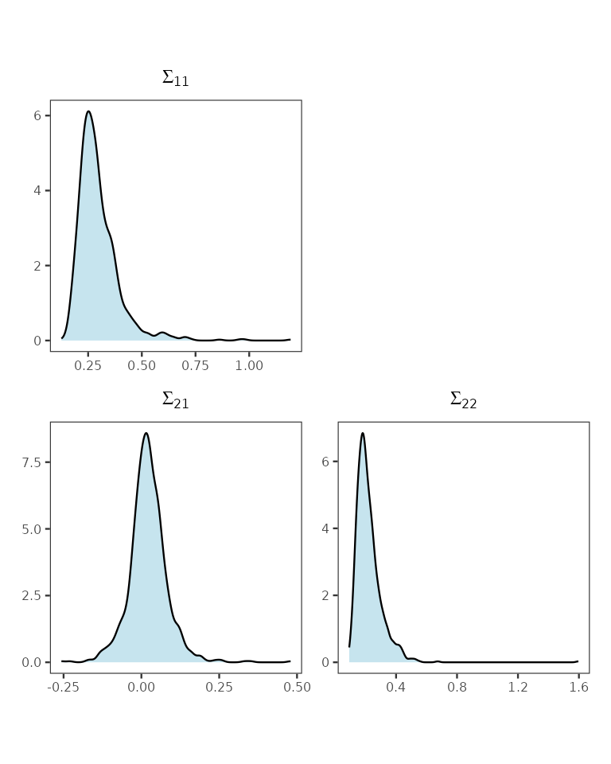

In this article, we discuss the following functions -
These functions can be used to fit Gaussian and non-Gaussian spatial-temporal point-referenced data with spatially-temporally varying coefficients.
Data
The package lazy-loads the synthetic dataset
simSpaceTime, observed at 500 space-time coordinates
with
in the unit square and
in the unit interval. It has two covariates x1 and
x2, a varying intercept z1_true that is a wave
travelling across space over time,
,
and a varying slope of x1, z2_true,
.
The Gaussian response y_gauss and the Poisson response
y_pois share them. Both surfaces are deterministic, not
draws from Gaussian processes. See ?simSpaceTime for the
code that generated the data. We use the first 200 space-time
coordinates for the following analysis.
## s1 s2 t_coords x1 x2 y_gauss y_pois
## 1 0.2216173 0.9919157 0.8458822 -0.16471416 2.0451334 0.6247576 28
## 2 0.5937945 0.3285576 0.7965761 -1.47214370 -1.1420950 -6.0580521 3
## 3 0.5511327 0.1808101 0.9182483 0.53238120 -0.1035955 4.0516817 0
## 4 0.2295121 0.7660980 0.8099342 1.64998720 1.3164616 8.8155560 7
## 5 0.9524661 0.9817298 0.7379233 -0.03672285 -0.9846361 4.1997422 16
## 6 0.6469231 0.4993637 0.4131629 -0.34204648 -1.0552852 2.0616680 19
## z1_true z2_true
## 1 0.7038331 -0.88391758
## 2 -0.9563118 0.38028823
## 3 -0.7412544 -0.40735390
## 4 0.4840762 -0.08350197
## 5 0.9752861 -0.67530256
## 6 0.9947987 -0.26943332Formula for varying coefficients model
We define the spatially-temporally varying coefficients model using a
formula, similar to that in the widely used
lm() function in the stats package. Suppose
refers to a space-time coordinate. See “Technical Overview” for more
details. The formula y_gauss ~ x1 + x2 + (x1) corresponds
to the spatial-temporal linear model
where y_gauss corresponds to the response variable
,
which is regressed on the predictors x1 and x2
given by
and
.
The model variables specified outside the parentheses correspond to
predictors with fixed effects, and the model inside the parentheses
correspond to variables with spatial-temporal varying coefficients. The
intercept is automatically considered within both the fixed and varying
coefficient components of the model, and hence
y_gauss ~ x1 + x2 + (x1) is functionally equivalent to
y_gauss ~ 1 + x1 + x2 + (1 + x1). For now, we only support
the cor.fn="gneiting-decay" covariogram. To implement a
model with just a spatial-temporal random effect, one may specify the
formula y_gauss ~ x1 + x2 + (1).
Bayesian Gaussian spatially-temporally varying coefficient models
For a Gaussian response, the model is
where each of the
varying coefficients
is an independent Gaussian process with variance
and a Gneiting correlation function with decay parameters
and
.
Given these and the noise-to-spatial variance ratios
,
the joint posterior distribution is available in closed form and
stvcLMexact() samples from it exactly. With
process.type = "independent", each process has its own
,
supplied as vectors of length
;
with process.type = "independent.shared", the processes
share one.
mod_lm <- stvcLMexact(y_gauss ~ x1 + x2 + (x1), data = dat,
sp_coords = as.matrix(dat[, c("s1", "s2")]),
time_coords = as.matrix(dat[, "t_coords"]),
cor.fn = "gneiting-decay",
process.type = "independent",
sptParams = list(phi_s = c(3, 6), phi_t = c(4, 2)),
noise_sp_ratio = c(0.5, 1),
n.samples = 1000, loopd = TRUE, verbose = TRUE)## ----------------------------------------
## Model description
## ----------------------------------------
## Model fit with 200 observations.
##
## Number of covariates 3 (including intercept).
## Number of covariates with spatial-temporally varying coefficients 2.
##
## Using the gneiting-decay spatial-temporal correlation function.
## Process type: independent.
##
## Priors:
## beta flat.
## sigma.sq: flat, proportional to 1/sigma.sq.
##
## Spatial-temporal process parameters:
## process 1: phi_s = 3.00, phi_t = 4.00, noise-to-spatial variance ratio = 0.50.
## process 2: phi_s = 6.00, phi_t = 2.00, noise-to-spatial variance ratio = 1.00.
##
## Number of posterior samples = 1000.
##
## LOO-PD calculation method = exact.
## ----------------------------------------The fixed effects are summarized below; y_gauss was
simulated with
.
The samples of the process variances are returned as
sigmaSq.z.
summary_beta <- t(apply(mod_lm$samples$beta, 1, function(x) quantile(x, c(0.025, 0.5, 0.975))))
rownames(summary_beta) <- mod_lm$X.names
print(summary_beta)## 2.5% 50% 97.5%
## (Intercept) 1.175300 1.8631698 2.5378232
## x1 4.591073 4.9749871 5.3475258
## x2 -1.032438 -0.9194189 -0.8102856Next, we stack candidate models built from candidate values of the
process parameters and noise-to-spatial variance ratios. For
process.type = "independent", the candidate values are
vectors of length
,
supplied as list() entries in
candidateModels().
mod.list.lm <- candidateModels(list(phi_s = list(c(3, 6), c(2, 4)),
phi_t = list(c(4, 2), c(1, 1)),
noise_sp_ratio = list(c(0.5, 1), c(1, 2))),
"cartesian")
mod_lm_stack <- stvcLMstack(y_gauss ~ x1 + x2 + (x1), data = dat,
sp_coords = as.matrix(dat[, c("s1", "s2")]),
time_coords = as.matrix(dat[, "t_coords"]),
cor.fn = "gneiting-decay",
process.type = "independent",
candidate.models = mod.list.lm,
n.samples = 1000, verbose = TRUE)##
## STACKING WEIGHTS:
##
## | phi_s[1] | phi_s[2] | phi_t[1] | phi_t[2] | noise_sp_ratio[1] | noise_sp_ratio[2] | weight |
## +---------+----------+----------+----------+----------+-------------------+-------------------+--------+
## | Model 1 | 3| 6| 4| 2| 0.5| 1| 0 |
## | Model 2 | 2| 4| 4| 2| 0.5| 1| 1 |
## | Model 3 | 3| 6| 1| 1| 0.5| 1| 0 |
## | Model 4 | 2| 4| 1| 1| 0.5| 1| 0 |
## | Model 5 | 3| 6| 4| 2| 1.0| 2| 0 |
## | Model 6 | 2| 4| 4| 2| 1.0| 2| 0 |
## | Model 7 | 3| 6| 1| 1| 1.0| 2| 0 |
## | Model 8 | 2| 4| 1| 1| 1.0| 2| 0 |
## +---------+----------+----------+----------+----------+-------------------+-------------------+--------+
post_lm <- stackedSampler(mod_lm_stack)The samples of are stacked by process: rows hold and rows hold . We compare their stacked posteriors with the true values.
post_z1_summ <- t(apply(post_lm$z[1:n_train, ], 1,
function(x) quantile(x, c(0.025, 0.5, 0.975))))
post_z2_summ <- t(apply(post_lm$z[n_train + 1:n_train, ], 1,
function(x) quantile(x, c(0.025, 0.5, 0.975))))
z1_combn <- data.frame(z = dat$z1_true, zL = post_z1_summ[, 1],
zM = post_z1_summ[, 2], zU = post_z1_summ[, 3])
z2_combn <- data.frame(z = dat$z2_true, zL = post_z2_summ[, 1],
zM = post_z2_summ[, 2], zU = post_z2_summ[, 3])
library(ggplot2)
plot_z1_summ <- ggplot(data = z1_combn, aes(x = z)) +
geom_errorbar(aes(ymin = zL, ymax = zU), alpha = 0.5, color = "skyblue") +
geom_point(aes(y = zM), size = 0.5, color = "darkblue", alpha = 0.5) +
geom_abline(slope = 1, intercept = 0, color = "red", linetype = "solid") +
xlab("True z1") + ylab("Stacked posterior of z1") + theme_bw() +
theme(panel.grid = element_blank(), aspect.ratio = 1)
plot_z2_summ <- ggplot(data = z2_combn, aes(x = z)) +
geom_errorbar(aes(ymin = zL, ymax = zU), alpha = 0.5, color = "skyblue") +
geom_point(aes(y = zM), size = 0.5, color = "darkblue", alpha = 0.5) +
geom_abline(slope = 1, intercept = 0, color = "red", linetype = "solid") +
xlab("True z2") + ylab("Stacked posterior of z2") + theme_bw() +
theme(panel.grid = element_blank(), aspect.ratio = 1)
plot_z1_summ + plot_z2_summ
Bayesian non-Gaussian spatially-temporally varying coefficient models
We now analyze the Poisson counts y_pois. Given
family = "poisson", the formula
y_pois ~ x1 + x2 + (x1) corresponds to the spatial-temporal
generalized linear model
The spatially-temporally varying coefficients
is a multivariate Gaussian process, and we pursue the following
specifications for
- independent process, independent process with shared parameters, and a
multivariate process. See “Technical Overview” for more details.
Using fixed hyperparameters
We use the function stvcGLMexact() to fit
spatially-temporally varying coefficient generalized linear models. In
the following code snippets, we demonstrate the uasge of the argument
process.Type to implement different variations of
spatial-temporal process specifications for the varying
coefficients.
Independent processes
In this case, since there are two independent processes
and
the candidate values of the spatial-temporal process parameters
sptParams is a list with tags phi_s and
phi_t, with each tag being of length 2. Here, the scale
parameter
has dimension 2.
mod1 <- stvcGLMexact(y_pois ~ x1 + x2 + (x1), data = dat, family = "poisson",
sp_coords = as.matrix(dat[, c("s1", "s2")]),
time_coords = as.matrix(dat[, "t_coords"]),
cor.fn = "gneiting-decay",
process.type = "independent",
priors = list(nu.beta = 5, nu.z = 5),
sptParams = list(phi_s = c(3, 6), phi_t = c(4, 2)),
verbose = FALSE, n.samples = 500)## Some priors were not supplied. Using defaults.Posterior samples of the scale parameters can be recovered by running
recoverGLMscale() on mod1.
mod1 <- recoverGLMscale(mod1)We visualize the posterior distributions of the scale parameters as follows.
post_scale_df <- data.frame(value = sqrt(c(mod1$samples$z.scale[1, ], mod1$samples$z.scale[2, ])),
group = factor(rep(c("sigma.z1", "sigma.z2"),
each = length(mod1$samples$z.scale[1, ]))))
library(ggplot2)
ggplot(post_scale_df, aes(x = value)) +
geom_density(fill = "lightblue", alpha = 0.6) +
facet_wrap(~ group, scales = "free") + labs(x = "", y = "Density") +
theme_bw() + theme(panel.background = element_blank(),
panel.grid = element_blank(), aspect.ratio = 1)
Independent shared processes
In this case, the processes
and
are independent but share a common covariance matrix. Hence,
sptParams is a list with tags phi_s and
phi_t, with each tag being of length 1. Here, the scale
parameter
is 1-dimensional.
mod2 <- stvcGLMexact(y_pois ~ x1 + x2 + (x1), data = dat, family = "poisson",
sp_coords = as.matrix(dat[, c("s1", "s2")]),
time_coords = as.matrix(dat[, "t_coords"]),
cor.fn = "gneiting-decay",
process.type = "independent.shared",
priors = list(nu.beta = 5, nu.z = 5),
sptParams = list(phi_s = 4, phi_t = 4),
verbose = FALSE, n.samples = 500)## Some priors were not supplied. Using defaults.Posterior samples of the scale parameters can be recovered by running
recoverGLMscale() on mod2.
mod2 <- recoverGLMscale(mod2)We visualize the posterior distributions of the scale parameters as follows.
post_scale_df <- data.frame(value = sqrt(mod2$samples$z.scale),
group = factor(rep(c("sigma.z"),
each = length(mod2$samples$z.scale))))
ggplot(post_scale_df, aes(x = value)) +
geom_density(fill = "lightblue", alpha = 0.6) +
facet_wrap(~ group, scales = "free") + labs(x = "", y = "Density") +
theme_bw() + theme(panel.background = element_blank(),
panel.grid = element_blank(), aspect.ratio = 1)
Multivariate processes
In this case,
is a 2-dimensional Gaussian process with covariance matrix
.
Further, we put an inverse-Wishart prior on
,
which can be specified through the priors argument. If not
supplied, uses the default
,
where
is the dimension of the multivariate process. Here,
sptParams is a list with tags phi_s and
phi_t, with each tag being of length 1, and the scale
parameter
is an
matrix.
mod3 <- stvcGLMexact(y_pois ~ x1 + x2 + (x1), data = dat, family = "poisson",
sp_coords = as.matrix(dat[, c("s1", "s2")]),
time_coords = as.matrix(dat[, "t_coords"]),
cor.fn = "gneiting-decay",
process.type = "multivariate",
priors = list(nu.beta = 5, nu.z = 5),
sptParams = list(phi_s = 4, phi_t = 4),
verbose = FALSE, n.samples = 500)## Some priors were not supplied. Using defaults.Posterior samples of the scale parameters can be recovered by running
recoverGLMscale() on mod3.
mod3 <- recoverGLMscale(mod3)We visualize the posterior distribution of the scale matrix as follows.
post_scale_z <- mod3$samples$z.scale
r <- sqrt(dim(post_scale_z)[1])
# Function to get (i,j) index from row number (column-major)
get_indices <- function(k, r) {
j <- ((k - 1) %/% r) + 1
i <- ((k - 1) %% r) + 1
c(i, j)
}
# Generate plots into a matrix
plot_matrix <- matrix(vector("list", r * r), nrow = r, ncol = r)
for (k in 1:(r^2)) {
ij <- get_indices(k, r)
i <- ij[1]
j <- ij[2]
if (i >= j) {
df <- data.frame(value = post_scale_z[k, ])
p <- ggplot(df, aes(x = value)) +
geom_density(fill = "lightblue", alpha = 0.7) +
theme_bw(base_size = 9) +
labs(title = bquote(Sigma[.(i) * .(j)])) +
theme(axis.title = element_blank(), axis.text = element_text(size = 6),
plot.title = element_text(size = 9, hjust = 0.5),
panel.grid = element_blank(), aspect.ratio = 1)
} else {
p <- ggplot() + theme_void()
}
plot_matrix[j, i] <- list(p)
}
library(patchwork)
# Assemble with patchwork
final_plot <- wrap_plots(plot_matrix, nrow = r)
final_plot
Posterior distributions of elements of the scale matrix.
Using predictive stacking
For implementing predictive stacking for spatially-temporally varying
models, we offer a helper function candidateModels() to
create a collection of candidate models. The grid of candidate values
can be combined either using a Cartesian product or a simple
element-by-element combination. We demonstrate stacking based on the
multivariate spatial-temporal process model.
Step 1. Create candidate models.
mod.list <- candidateModels(list(
phi_s = list(2, 4),
phi_t = list(1, 4),
boundary = c(0.5, 0.75)), "cartesian")Step 2. Run stvcGLMstack().
mod1 <- stvcGLMstack(y_pois ~ x1 + x2 + (x1), data = dat, family = "poisson",
sp_coords = as.matrix(dat[, c("s1", "s2")]),
time_coords = as.matrix(dat[, "t_coords"]),
cor.fn = "gneiting-decay",
process.type = "multivariate",
priors = list(nu.beta = 5, nu.z = 5),
candidate.models = mod.list,
loopd.controls = list(method = "CV", CV.K = 10, nMC = 500),
n.samples = 1000)## Some priors were not supplied. Using defaults.##
## STACKING WEIGHTS:
##
## | phi_s | phi_t | boundary | weight |
## +---------+-------+-------+----------+--------+
## | Model 1 | 2| 1| 0.50| 0.000 |
## | Model 2 | 4| 1| 0.50| 0.000 |
## | Model 3 | 2| 4| 0.50| 0.117 |
## | Model 4 | 4| 4| 0.50| 0.308 |
## | Model 5 | 2| 1| 0.75| 0.000 |
## | Model 6 | 4| 1| 0.75| 0.000 |
## | Model 7 | 2| 4| 0.75| 0.575 |
## | Model 8 | 4| 4| 0.75| 0.000 |
## +---------+-------+-------+----------+--------+Step 3. Recover posterior samples of the scale parameters.
mod1 <- recoverGLMscale(mod1)Step 4. Sample from the stacked posterior distribution.
post_samps <- stackedSampler(mod1)Now, we analyze the posterior distribution of the latent process as obtained from the stacked posterior.
post_z <- post_samps$z
post_z1_summ <- t(apply(post_z[1:n_train,], 1,
function(x) quantile(x, c(0.025, 0.5, 0.975))))
post_z2_summ <- t(apply(post_z[n_train + 1:n_train,], 1,
function(x) quantile(x, c(0.025, 0.5, 0.975))))
z1_combn <- data.frame(z = dat$z1_true, zL = post_z1_summ[, 1],
zM = post_z1_summ[, 2], zU = post_z1_summ[, 3])
z2_combn <- data.frame(z = dat$z2_true, zL = post_z2_summ[, 1],
zM = post_z2_summ[, 2], zU = post_z2_summ[, 3])
plot_z1_summ <- ggplot(data = z1_combn, aes(x = z)) +
geom_errorbar(aes(ymin = zL, ymax = zU), alpha = 0.5, color = "skyblue") +
geom_point(aes(y = zM), size = 0.5, color = "darkblue", alpha = 0.5) +
geom_abline(slope = 1, intercept = 0, color = "red", linetype = "solid") +
xlab("True z1") + ylab("Posterior of z1") + theme_bw() +
theme(panel.grid = element_blank(), aspect.ratio = 1)
plot_z2_summ <- ggplot(data = z2_combn, aes(x = z)) +
geom_errorbar(aes(ymin = zL, ymax = zU), alpha = 0.5, color = "skyblue") +
geom_point(aes(y = zM), size = 0.5, color = "darkblue", alpha = 0.5) +
geom_abline(slope = 1, intercept = 0, color = "red", linetype = "solid") +
xlab("True z2") + ylab("Posterior of z2") + theme_bw() +
theme(panel.grid = element_blank(), aspect.ratio = 1)
plot_z1_summ + plot_z2_summ
Next, we analyze the posterior distribution of the scale matrix that models the inter-process dependence structure.
post_scale_z <- post_samps$z.scale
r <- sqrt(dim(post_scale_z)[1])
# Generate plots into a matrix
plot_matrix <- matrix(vector("list", r * r), nrow = r, ncol = r)
for (k in 1:(r^2)) {
ij <- get_indices(k, r)
i <- ij[1]
j <- ij[2]
if (i >= j) {
df <- data.frame(value = post_scale_z[k, ])
p <- ggplot(df, aes(x = value)) +
geom_density(fill = "lightblue", alpha = 0.7) +
theme_bw(base_size = 9) +
labs(title = bquote(Sigma[.(i) * .(j)])) +
theme(axis.title = element_blank(), axis.text = element_text(size = 6),
plot.title = element_text(size = 9, hjust = 0.5),
panel.grid = element_blank(), aspect.ratio = 1)
} else {
p <- ggplot() + theme_void()
}
plot_matrix[j, i] <- list(p)
}
# Assemble with patchwork
final_plot <- wrap_plots(plot_matrix, nrow = r)
final_plot
Stacked posterior distribution of the elements of the inter-process covariance matrix.